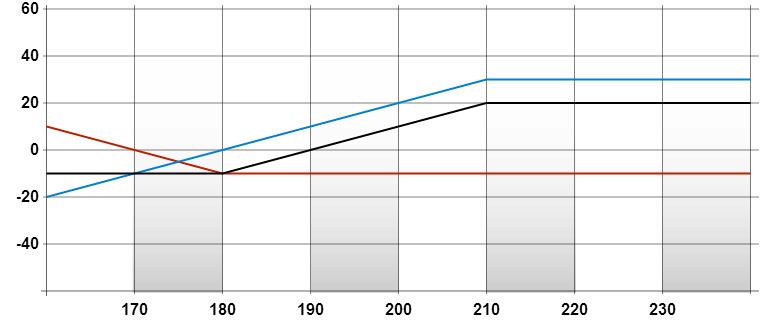

看好跨價認沽期權
返回| 策略 |
|---|
| 看好跨價認沽期權 |
| 成份 |
| 買入較低行使價/水平的認沽期權，沽出相同月份較高行使價/水平的認沽期權 |
| 潛在盈利 |
|
| 最大虧損 |
| 兩個行使價/水平之差減去已收取的期權金淨額 |
| 時間值影響 |
| 中性 |
| 打和點 |
| 較高的行使價/水平減去已收取的期權金淨額 |
| 備註 |
| 與需要付出期權金的看好跨價認購期權相比，看好跨價認沽期權策略可淨收取期權金，原因是較低行使價/水平的認沽期權金會比較高行使價/水平的認沽期權金為低。 |
例子
盈 餘/ 虧 損 |
 |
|---|---|
| 正股價格 | |
|
| |
| 成份 |
|---|
| 買入「ABC五月180元認沽」付出 10元，同時沽出「ABC五月210元認沽」，收取30元 |
| 期權金淨額 |
| 收取 (30元 – 10元) = 20元 |
| 打和點 |
| 210元 – 20元 = 190元 |
| 錄得盈利 |
| 當正股價升越 190元 |
| 潛在盈利 |
| 20元 |
| 潛在虧損 |
| (210元 – 180元) – 20元 = 10元 |
| 時間值影響 |
| 中性 |